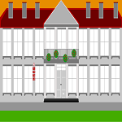
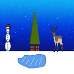

Project 1 | Project 2 | Project 3 | Project 4 |
|---|---|---|---|
(Startowy project) | (Tabela) | (Data i czas) | (Multimedia) |
Project 5 | Project 6 | Project 7 | Project 8 |
(Komórki i rowspan) | (Tabela+mapa) | (Formularz) | (Kalendarz) |
Project 9 | Project 10 | Project 11 | Project 12 |
(CSS o mnie(1)) | (CSS o mnie(2)) | (CSS o mnie (3)) | (Gimp wszystkich projektów) |
|  |  | ||
(Szkola) | (Świąteczny obrazek) |